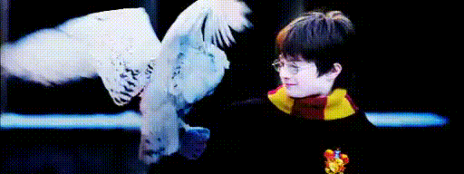

Proibido corujas em Hogwarts
A partir do dia 5 de dezembro qualquer uso de corujas está proibido devido a quantidade de fezes encontrada pelo colégio.
Depois de muitos anos o uso de corujas para o envio de cartas hogwarts cansou de tanta sujeira que elas produziam e agora está preparando a instalação de uma nova rede de comunicação que possibilitara enviar cartas e outros objetos através de portais diretos nos espelhos que serão muito mais eficazes do que as corujas elas são entregues imediatamente e prometem ter uma função de vídeo chamada e sem causar nenhuma sujeira.